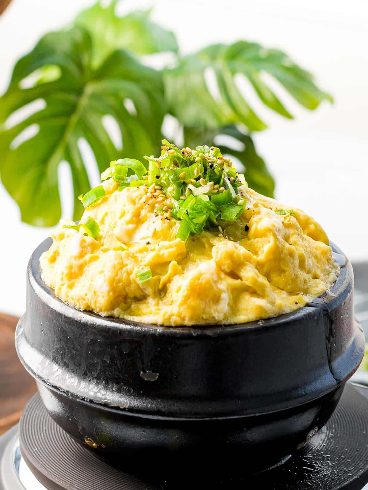
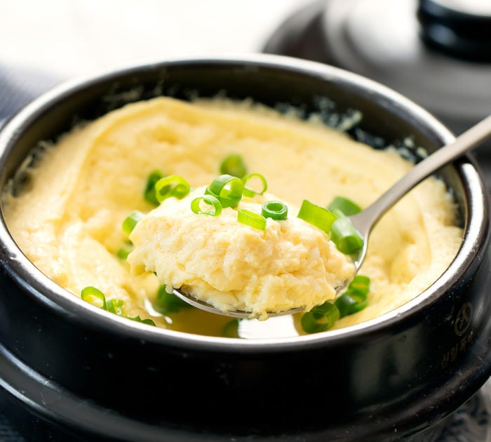

Gyeran Jjim (Korean Steamed Eggs)


Description
Gyeranjjim (계란찜) is a Korean savory egg custard dish. Gyeran means eggs, and jjim refers to a steamed dish. It’s a popular side dish for breakfast, lunch, and dinner both at home and restaurants. Gyeranjjim is so quick and easy to make. You can often add it to any meal.
Ingredients
- 4-5 large eggs
- 1 green onion, chopped
- 1 cup salted chicken broth (or 1 cup water with 4 teaspoons fish sauce)
- 2 teaspoons toasted sesame oil
Instructions
- Combine eggs, green onion, and the chicken broth in a 3 cup earthenware pot or a small, heavy bottomed stainless steel saucepan.
- Mix it well with a fork or whisk.
- Cover with dome-shaped heat-safe ceramic or stainless-steel bowl that fits over the pot.
- Set it over medium-low and cook for about 12 to 13 minutes (about 8 to 10 minutes if using stainless steel saucepan), until steam comes out and steamy liquid begins to drip down the sides. The eggs will smell nutty.
- Carefully remove the lid. Drizzle the sesame oil over top and serve right away with rice.
Source: Maangchi
Recipe Sites
- Binging With Babish The landing page is eye-catching and makes users want to start cooking right away alongside Babish. I also like the typeface used on the site. The scroll feature is a nice plus.
- Bon Appetit is well-known for their delicous recipes and have very popular recipe series on YouTube. I like their use of various grid/column types throughout the site. This website shows that the landing page doesn't have to be one large image. Additionally, they have a recipe for Korean Steamed Eggs!
- Joshua Weissman I like this website because of the filter system the site has when searching for recipes. You can filter through various occasions, cuisines, meals, types, and etc. Also, I like the colors used for the site and the Sans Serif typeface. The hover effect is also a nice plus because the arrows move and the box gets highlighted.
Non-Recipe Sites
- Earth Month With A Redwood I really like this site becuase of its interactive feature. Users are prompted to drag and immerse themsevles in a virutal experience to learn more about the history of the company's whiskey.
- Cyclemon I like this website because of the scroll feature. The background changes as the user scrolls and makes marketing the product a fun experience.
- Netflix I think it'd be interesting to allow users to customize profiles to keep track of their saved recipes, but also be a part of a community amongst their friends/families.